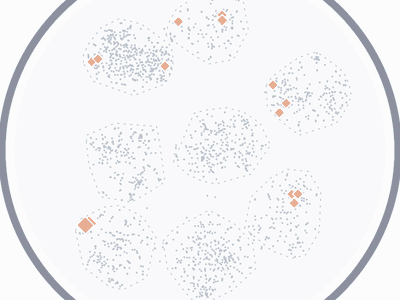
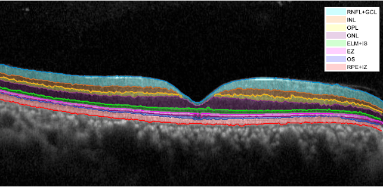

Research
I work on computer vision and machine learning. Lately my focus has been on generative models: making them easier to control and edit, and training multimodal models with less labeled data.
A full list of publications is in my CV.
Selected projects

Decides which prompts are worth labeling while a vision-language model trains, focusing on the ones it still answers inconsistently. With only 10% of the data labeled, it outperforms GRPO trained on the full pool for the same number of steps.
Brush-based image editing with diffusion models, where every edit lives on its own layer and can be hidden, adjusted or removed later. No training required, and edits appear in real time.
Deep learning models for recognizing faces and tracking facial landmarks, eyelids, head pose, attention and gaze.

Automatic segmentation of retinal layers in OCT scans. Changes in the shape and thickness of these layers signal eye disease, so accurate segmentation helps ophthalmologists diagnose it.